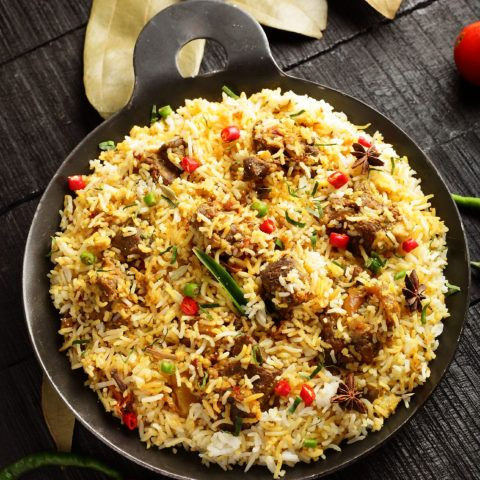

mutton pulao

This recipe will guide you on how to make mutton pulao.
Ingredients for mutton curry
- 500 gms mutton/meat pieces cleaned and washed well
- 2 tablespoon edible oil
- 3 medium sized onions finely sliced
- 2-3 slit green chillies
- 1 tablespoon ginger garlic paste
- salt - to taste
- 2 teaspoon red chilli powder
- ¼ teaspoon turmeric powder
- 1 teaspoon black pepper powder kali mirch powder
- ½ teaspoon garam masala powder
- 1 cup beaten yogurt
- 1 teaspoon coriander seeds powder
- ½ teaspoon cumin seeds powder
Ingredients for pulao
- 3 cups of rice ordinary/basmati
- 1 tablespoon edible oil
- 1 medium sized sliced onion
- 1 teaspoon ginger garlic paste
- 1 small cinnamon stick dalchini
- 2 bay leaves tej patta
- 2 cardamoms elaichi
- 2 cloves loung
- ½ teaspoon caraway seeds
- 1 tablespoon chopped coriander leaves
- 1 tablespoon chopped mint leaves
- 2 slit green chillies
- 2 tablespoon beaten yogurt
- 6 cups of water
- salt to taste
instruction
Instruction for mutton curry:-
- Firstly, in a pressure cooker, add oil and heat it.
- Add the sliced onions and saute till translucent.
- Add vertically slit green chillies and stir well.
- Add ginger garlic paste and saute for few minutes.
- Add mutton pieces and roast them well.
- Add salt, red chilli powder, turmeric powder, coriander seeds powder, cumin seeds powder and mix well.
- Add beaten yogurt, mix well and cook for few minutes.
- Add little water and pressure cook the mutton till tender.
- Reduce the steam, add black pepper powder, garam masala powder, coriander leaves and cook for few minutes.
- If there is lots of water in the curry then cook for few minutes by keeping the lid uncovered.
- Switch off the flame and put it aside.
Instruction for pulao:-
- Take a cooking vessel, add oil and heat it.
- Add cinnamon stick, bay leaves, cardamoms, cloves, caraway seeds and saute them.
- Add the sliced onion, slit green chillies and saute for a minute.
- Add ginger garlic paste and saute for few seconds.
- Add coriander leaves and mint leaves.
- Add yogurt and mix well.
- Keep stirring and cook for few minutes.
- Add water, salt, stir and bring the water to a boil.
- Wash rice well and add it to the boiling water.
- Also add the cooked mutton curry into it.
- Mix everything well.
- Check for salt and add if required.
- Cook the rice until it is completely done from medium flame to low flame.
- Always place a tawa under the cooking vessel inorder to avoid burning the base of the vessel.
- Switch off the flame.
- Serve the rice on a plate.
- Garnish with fried onions and chopped coriander leaves and lemon slices.
- Serve hot with raita!!!
NOTES
- If basmati rice is used then the rice needs to be soaked for about half an hour before adding to the boiling water.
- Strain the rice and add it to the boiling water.
- Lemon drops can be added to the cooking rice.
- Boiled, peeled and sliced potatoes too can be added to the rice and mutton to make the recipe more yummy!!!